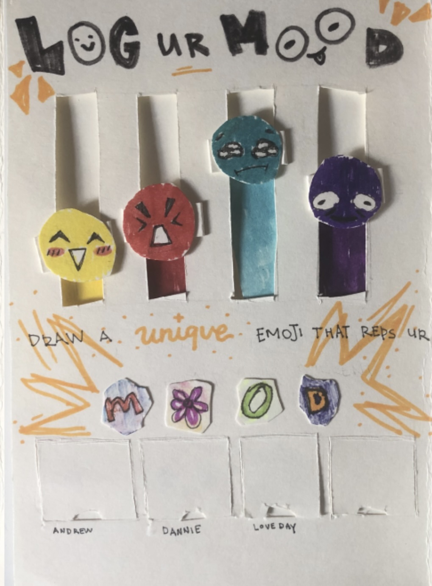
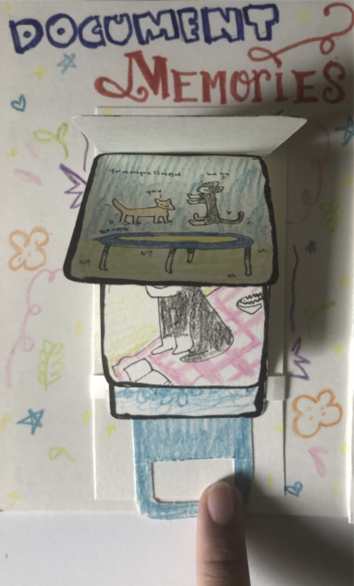
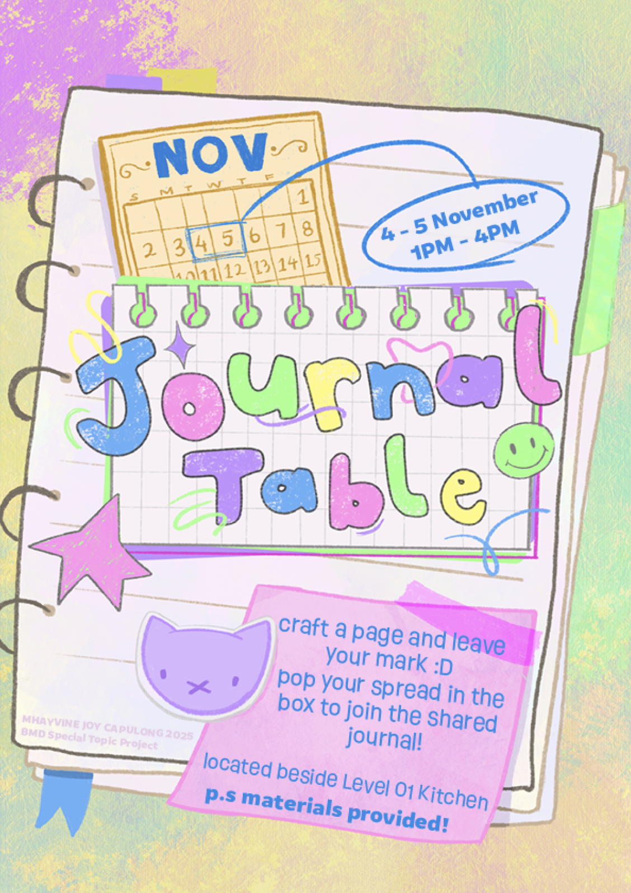
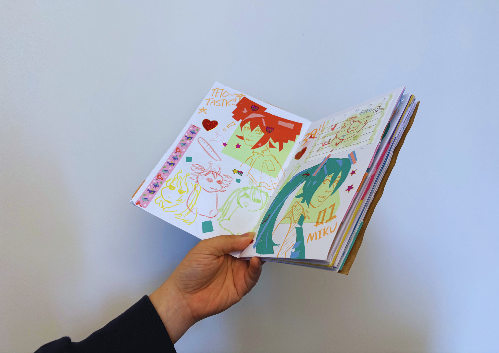
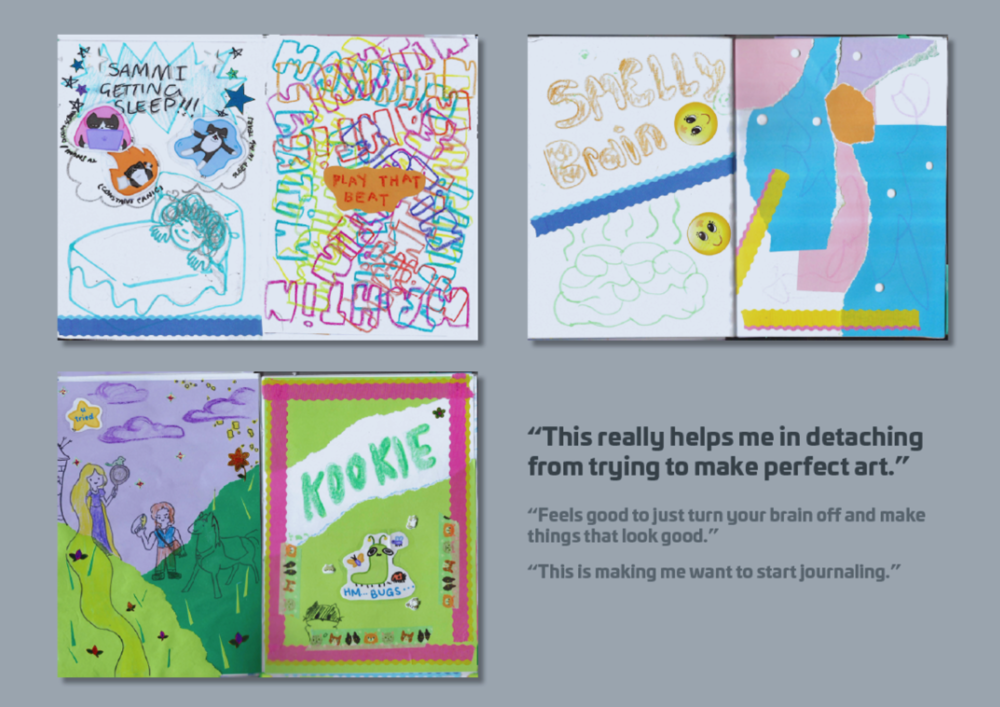

CLIENT BRIEF - 2025
Metro Mission
Group, Academic Project
8 Weeks
Figma, Illustrator
Mobile Game, Collectible Merch
CONTEXT
meow
woof
THE CHALLENGE / BRIEF
WHAT AM I SOLVING?
Through this project, I wanted to explore how hands-on interaction could create a more focused and personalized journaling experience that would encourage users to extend the practice into their daily lives. Analog creative journaling could offer a break from digital exhaustion and a way to reconnect with creative practices in a slower, self-directed pace.
WHY DOES THIS MATTER?
//
PROCESS
INITIAL RESEARCH QUESTION
"How could an interactive illustrative booklet and maker culture be used to encourage engagement with creative journaling?"
USER TESTING
//
My initial approach was to introduce the audience to creative journaling through a low-pressure, interactive booklet that offered a gentle introduction to journaling, alongside spread ideas they could experiment with.


(example of interactive booklet spreads)
From this, I discovered that something as simple as a one-time use interactive booklet would not be enough to engage people into actually starting their journey in creative journaling, and the pressure of the blank canvas was another factor that kept people from starting.
From here, I shifted my approach and began experimenting with more hands-on activities. My focus then became understanding what motivated people to create, and whether tools such as prompts, timers, or guided activities were needed to help facilitate the process from afar.
I tested a range different ways to encourage creative journaling :


(the tests I conducted - prompt driven, limited materials, limited time, digital journaling)
From these tests, I found that directly involving them helped users create an actual connection to what they were interacting with. This helped me shape the final experience which was an open space journal table.
UPDATED RESEARCH QUESTION

THE FINAL OUTCOME
Found that the most effective way to get them into the hobby/habit, is simply providing them with the experience and letting them freely explore.





REFLECTION
This project solidified my love for experience design, and human centered design. It was great fun psychoanalyzing why people did the things they did, and crafting an experience tailored to these habits and quirks. I also gained a lot of positive feedback from the event, with some people requesting I do it again so thats how you know it was #positive